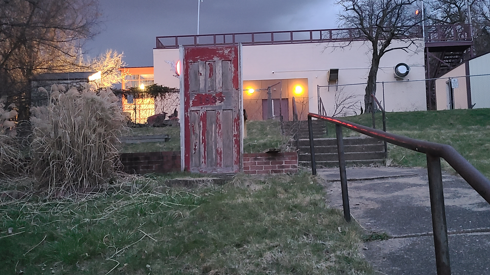
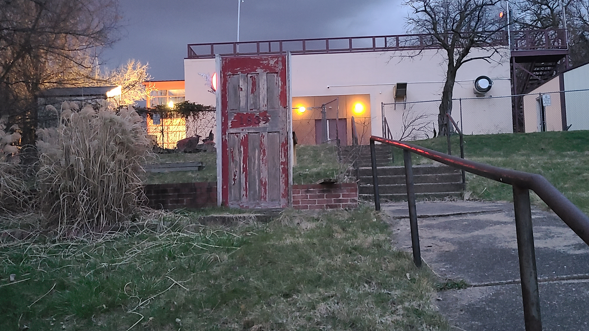

Mainway
-Opened in 1954 and operated by a family of 4 brothers, the Mainway wasn’t just any old grocery store…it fostered a warm atmosphere for shoppers and workers, and everyone got along regardless of the big bogeyman in the room, race
Riots
-Burned down in 1968 during the Hill District riots by an angry black populace pushed to the edge by the expansion of the Civic Arena, and the promise to provide more affordable housing for the predominantly black families displaced by the project being broken. The final straw was the assassination of Martin Luther King Jr on April 4 of 1968.-The Mainway was torched in the heat of the anger, leaving a scar in the community – and a gaping hole which wasn’t filled for a long time.
Food Desert
-Ever since the burning of the Mainway, the Hill was a food desert for 30 years.-In 2013, a Shop ‘n Save opened, but it closed down in 2019 due to financial loss and maintenance issues
Salem’s
-The lot was purchased by Abdullah Salem for $1.9 million-Abdullah Salem has ties to the Hill District
-Salem’s has begun welcoming visitors on February 8th, but the whole store, with a restaurant, will have a grand opening in April.


 
